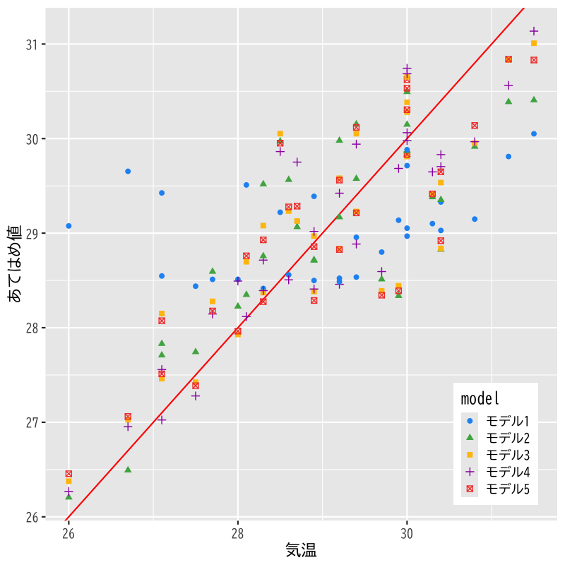
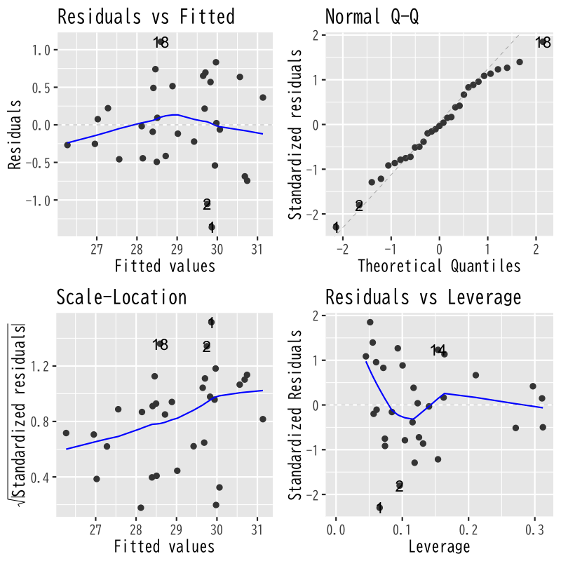
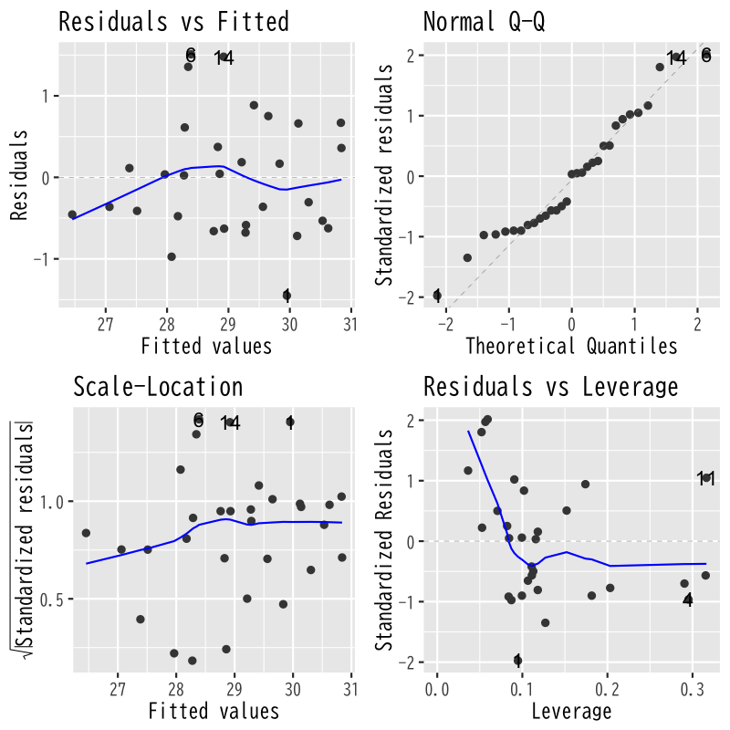

回帰分析
モデルの評価
(Press ? for help, n and p for next and previous slide)
講義の内容
- 第1回 : 回帰モデルの考え方と推定
- 第2回 : モデルの評価
- 第3回 : モデルによる予測と発展的なモデル
回帰分析の復習
線形回帰モデル
- 目的変数 を 説明変数 で説明する関係式を構成
- 説明変数 : \(x_{1},\dotsc,x_{p}\) (p次元)
- 目的変数 : \(y\) (1次元)
回帰係数 \(\beta_{0},\beta_{1},\dotsc,\beta_{p}\) を用いた一次式
\begin{equation} y=\beta_{0}+\beta_{1}x_{1}+\dotsb+\beta_{p}x_{p} \end{equation}誤差項 を含む確率モデルで観測データを表現
\begin{equation} y_i=\beta_{0}+\beta_{1} x_{i1}+\cdots+\beta_{p}x_{ip}+\epsilon_i \quad (i=1,\dotsc,n) \end{equation}
簡潔な表現のための行列
デザイン行列 (説明変数)
\begin{equation} X= \begin{pmatrix} 1 & x_{11} & x_{12} & \cdots & x_{1p} \\ 1 & x_{21} & x_{22} & \cdots & x_{2p} \\ \vdots & \vdots & \vdots & & \vdots \\ 1 & x_{n1} & x_{n2} & \cdots & x_{np} \end{pmatrix} \end{equation}
簡潔な表現のためのベクトル
ベクトル (目的変数・誤差・回帰係数)
\begin{equation} \boldsymbol{y}= \begin{pmatrix} y_{1} \\ y_2 \\ \vdots \\ y_n \end{pmatrix},\quad \boldsymbol{\epsilon}= \begin{pmatrix} \epsilon_{1} \\ \epsilon_2 \\ \vdots \\ \epsilon_n \end{pmatrix},\quad \boldsymbol{\beta}= \begin{pmatrix} \beta_{0} \\ \beta_{1} \\ \vdots \\ \beta_{p} \end{pmatrix} \end{equation}
問題の記述
確率モデル
\begin{equation} \boldsymbol{y} =X\boldsymbol{\beta}+\boldsymbol{\epsilon}, \quad\boldsymbol{\epsilon}\sim\text{確率分布} \end{equation}回帰式の推定 : 残差平方和 の最小化
\begin{equation} S(\boldsymbol{\beta}) =(\boldsymbol{y}-X\boldsymbol{\beta})^{\mathsf{T}} (\boldsymbol{y}-X\boldsymbol{\beta}) \end{equation}
解の表現
解の条件 : 正規方程式
\begin{equation} X^{\mathsf{T}}X\boldsymbol{\beta} =X^{\mathsf{T}}\boldsymbol{y} \end{equation}解の一意性 : Gram 行列 \(X^{\mathsf{T}}X\) が正則
\begin{equation} \boldsymbol{\hat{\beta}} = (X^{\mathsf{T}}X)^{-1} X^{\mathsf{T}}\boldsymbol{y} \end{equation}
最小二乗推定量の性質
- あてはめ値 \(\boldsymbol{\hat{y}}=X\boldsymbol{\hat{\beta}}\) は \(X\) の列ベクトルの線形結合
残差 \(\boldsymbol{\hat{\epsilon}}=\boldsymbol{y}-\boldsymbol{\hat{y}}\) はあてはめ値 \(\boldsymbol{\hat{y}}\) と直交
\begin{equation} \boldsymbol{\hat{\epsilon}}^{\mathsf{T}}\boldsymbol{\hat{y}} =0 \end{equation}回帰式は説明変数と目的変数の 標本平均 を通過
\begin{equation} \bar{y} = (1,\bar{\boldsymbol{x}}^{\mathsf{T}})\boldsymbol{\hat{\beta}}, \quad \bar{\boldsymbol{x}} =\frac{1}{n}\sum_{i=1}^n\boldsymbol{x}_i, \quad \bar{y} =\frac{1}{n}\sum_{i=1}^ny_i, \end{equation}
寄与率
決定係数 (R-squared)
\begin{equation} R^2 = 1-\frac{\sum_{i=1}^n\hat{\epsilon}_i^2}{\sum_{i=1}^n(y_i-\bar{y})^2} \end{equation}自由度調整済み決定係数 (adjusted R-squared)
\begin{equation} \bar{R}^2 = 1-\frac{\frac{1}{n{-}p{-}1}\sum_{i=1}^n\hat{\epsilon}_i^2} {\frac{1}{n{-}1}\sum_{i=1}^n(y_i-\bar{y})^2} \end{equation}- 不偏分散で補正
解析の事例
実データによる例
- 気象庁より取得した東京の気候データ (再掲)
東京の8月の気候の分析
データの一部
東京の8月の気候 日付 気温 降雨 日射 降雪 風向 風速 気圧 湿度 雲量 2022-08-01 30.6 0 24.53 0 SSE 2.8 1010.1 72 8.8 2022-08-02 31.6 0 24.78 0 SSE 2.5 1008.8 71 9.8 2022-08-03 31.5 0 21.24 0 SSE 2.3 1005.1 75 7.3 2022-08-04 24.6 18 3.46 0 NE 2.7 1006 89 10 2022-08-05 23.8 0 7.65 0 NE 2.9 1006.1 83 9.8 2022-08-06 25.2 0 17.06 0 SSE 2.4 1008.1 73 10 2022-08-07 27.6 0 14.45 0 SSE 2.2 1009.3 80 8.3 2022-08-08 29.8 0 22.52 0 S 4.5 1008.5 75 4.8 2022-08-09 30.9 0 25.5 0 S 5.5 1006.9 69 6.8 2022-08-10 30.5 0 25.99 0 S 5.3 1007.2 70 6 2022-08-11 29.5 0 22.9 0 S 5.4 1007.5 75 6 2022-08-12 28.3 2 15.36 0 S 5.8 1007.5 81 9.8 2022-08-13 25.5 47.5 4.53 0 S 4.8 1005.6 94 10 2022-08-14 28.2 0 16.28 0 SSE 2.6 1003 84 8.8 2022-08-15 29.4 0 18.65 0 S 2.5 1003.4 78 8.8
- 気温を説明する5種類の線形回帰モデルを検討
- モデル1 : 気温 = F(気圧)
- モデル2 : 気温 = F(日射)
- モデル3 : 気温 = F(気圧, 日射)
- モデル4 : 気温 = F(気圧, 日射, 湿度)
- モデル5 : 気温 = F(気圧, 日射, 雲量)
分析の視覚化
関連するデータの散布図

Figure 1: 散布図
モデル1の推定結果

Figure 2: モデル1
モデル2の推定結果
Figure 3: モデル2
モデル3の推定結果

Figure 4: モデル3
観測値とあてはめ値の比較

Figure 5: モデルの比較
モデルの比較
決定係数(\(R^{2}\), Adjusted \(R^{2}\))
寄与率によるモデルの比較 目的変数 気温 モデル1 モデル2 モデル3 モデル4 モデル5 気圧 -0.178 (0.127) -0.223 (0.068) -0.214 (0.067) -0.242 (0.068) 日射 0.297 (0.041) 0.306 (0.036) 0.366 (0.056) 0.348 (0.045) 湿度 0.071 (0.051) 雲量 0.238 (0.161) Constant 206.535 (127.430) 22.969 (0.690) 247.477 (68.433) 231.843 (68.254) 263.717 (67.941) R2 0.064 0.641 0.741 0.758 0.760 Adjusted R2 0.031 0.628 0.722 0.731 0.733
あてはめ値の性質
あてはめ値
さまざまな表現
\begin{align} \boldsymbol{\hat{y}} &=X\boldsymbol{\hat{\beta}}\\ &\qquad(\boldsymbol{\hat{\beta}}=(X^{\mathsf{T}}X)^{-1}X^{\mathsf{T}}\boldsymbol{y}を代入)\\ &=X(X^{\mathsf{T}}X)^{-1}X^{\mathsf{T}}\boldsymbol{y} && (A) \\ &\qquad(\boldsymbol{y}=X\boldsymbol{\beta}+\boldsymbol{\epsilon}を代入)\\ &=X(X^{\mathsf{T}}X)^{-1}X^{\mathsf{T}}X\boldsymbol{\beta} +X(X^{\mathsf{T}}X)^{-1}X^{\mathsf{T}}\boldsymbol{\epsilon}\\ &=X\boldsymbol{\beta} +X(X^{\mathsf{T}}X)^{-1}X^{\mathsf{T}}\boldsymbol{\epsilon} && (B) \\ \end{align}- (A) あてはめ値は 観測値の重み付けの和 で表される
- (B) あてはめ値と観測値は 誤差項 の寄与のみ異なる
あてはめ値と誤差
残差と誤差の関係
\begin{align} \boldsymbol{\hat{\epsilon}} &=\boldsymbol{y}-\boldsymbol{\hat{y}}\\ &=\boldsymbol{\epsilon} -X(X^{\mathsf{T}}X)^{-1}X^{\mathsf{T}} \boldsymbol{\epsilon}\\ &=\bigl(I -X(X^{\mathsf{T}}X)^{-1}X^{\mathsf{T}} \bigr) \boldsymbol{\epsilon} && (C) \\ \end{align}- (C) 残差は 誤差の重み付けの和 で表される
ハット行列
定義
\begin{equation} H= X(X^{\mathsf{T}}X)^{-1}X^{\mathsf{T}} \end{equation}ハット行列 \(H\) による表現
\begin{align} \boldsymbol{\hat{y}} &=H\boldsymbol{y}\\ \boldsymbol{\hat{\epsilon}} &=(I-H)\boldsymbol{\epsilon} \end{align}- あてはめ値や残差は \(H\) を用いて簡潔に表現される
ハット行列の性質
- 観測データ(デザイン行列)のみで計算される
- 観測データと説明変数の関係を表す
対角成分 (テコ比; leverage) は観測データが自身の予測に及ぼす影響の度合を表す
\begin{equation} \hat{y}_{j} = (H)_{jj}y_{j} + \text{(それ以外のデータの寄与)} \end{equation}- \((A)_{ij}\) は行列 \(A\) の \((i,j)\) 成分
- テコ比が小さい : 他のデータでも予測が可能
- テコ比が大きい : 他のデータでは予測が困難
演習
問題
- ハット行列 \(H\) について以下を示しなさい
- \(H\) は対称行列であること
\(H\) は羃等であること
\begin{equation} H^{2}=H,\quad (I-H)^{2}=I-H \end{equation}以下の等式が成り立つこと
\begin{equation} HX=X,\quad X^{\mathsf{T}}H=X^{\mathsf{T}} \end{equation}
ヒント
いずれも \(H\) の定義にもとづいて計算すればよい
\begin{align} H^{\mathsf{T}} &= (X(X^{\mathsf{T}}X)^{-1}X^{\mathsf{T}})^{\mathsf{T}}\\ H^{2} &= (X(X^{\mathsf{T}}X)^{-1}X^{\mathsf{T}}) (X(X^{\mathsf{T}}X)^{-1}X^{\mathsf{T}})\\ (I-H)^{2} &= I-2H+H^{2}\\ HX &= (X(X^{\mathsf{T}}X)^{-1}X^{\mathsf{T}})X\\ X^{\mathsf{T}}H &=(HX)^{\mathsf{T}} \end{align}
推定量の統計的性質
最小二乗推定量の性質
推定量と誤差の関係
\begin{align} \boldsymbol{\hat{\beta}} &=(X^{\mathsf{T}}X)^{-1}X^{\mathsf{T}}\boldsymbol{y}\\ &=(X^{\mathsf{T}}X)^{-1}X^{\mathsf{T}}(X\boldsymbol{\beta}+\boldsymbol{\epsilon}) \\ &=(X^{\mathsf{T}}X)^{-1}X^{\mathsf{T}}X\boldsymbol{\beta} +(X^{\mathsf{T}}X)^{-1}X^{\mathsf{T}}\boldsymbol{\epsilon}\\ &=\boldsymbol{\beta} +(X^{\mathsf{T}}X)^{-1}X^{\mathsf{T}}\boldsymbol{\epsilon} \end{align}正規分布の重要な性質 (再生性)
正規分布に従う独立な確率変数の和は正規分布に従う
推定量の分布
- 誤差の仮定 : 独立，平均0 分散 \(\sigma^{2}\) の 正規分布
推定量は以下の多変量正規分布に従う
\begin{align} \mathbb{E}[\boldsymbol{\hat{\beta}}] &=\boldsymbol{\beta}\\ \mathrm{Cov}(\boldsymbol{\hat{\beta}}) &=\sigma^{2}(X^{\mathsf{T}}X)^{-1} \end{align}\begin{equation} \boldsymbol{\hat{\beta}} \sim \mathcal{N}(\boldsymbol{\beta},\sigma^{2}(X^{\mathsf{T}}X)^{-1}) \end{equation}
演習
問題
- 誤差が独立で，平均0 分散 \(\sigma^{2}\) の正規分布に従うとき，
最小二乗推定量 \(\boldsymbol{\hat{\beta}}\) について以下を示しなさい
- 平均は \(\boldsymbol{\beta}\) (真の母数)となること
- 共分散行列は \(\sigma^{2}(X^{\mathsf{T}}X)^{-1}\) となること
解答例
定義にもとづいて計算する
\begin{align} \mathbb{E}[\boldsymbol{\hat{\beta}}] &= \mathbb{E}[\boldsymbol{\beta} +(X^{\mathsf{T}}X)^{-1}X^{\mathsf{T}}\boldsymbol{\epsilon}]\\ &= \boldsymbol{\beta} +(X^{\mathsf{T}}X)^{-1}X^{\mathsf{T}}\mathbb{E}[\boldsymbol{\epsilon}]\\ &= \boldsymbol{\beta} \end{align}
定義にもとづいて計算する
\begin{align} \mathrm{Cov}(\boldsymbol{\hat{\beta}}) &= \mathbb{E}[ (\boldsymbol{\hat{\beta}}-\boldsymbol{\beta}) (\boldsymbol{\hat{\beta}}-\boldsymbol{\beta})^{\mathsf{T}}]\\ &= \mathbb{E}[(X^{\mathsf{T}}X)^{-1}X^{\mathsf{T}}\boldsymbol{\epsilon} \boldsymbol{\epsilon}^{\mathsf{T}}X(X^{\mathsf{T}}X)^{-1}]\\ &= (X^{\mathsf{T}}X)^{-1}X^{\mathsf{T}} \mathbb{E}[\boldsymbol{\epsilon}\boldsymbol{\epsilon}^{\mathsf{T}}] X(X^{\mathsf{T}}X)^{-1}\\ &= (X^{\mathsf{T}}X)^{-1}X^{\mathsf{T}} (\sigma^{2}I) X(X^{\mathsf{T}}X)^{-1}\\ &= \sigma^{2} (X^{\mathsf{T}}X)^{-1} \end{align}
誤差の評価
寄与率 (再掲)
決定係数 (R-squared)
- 回帰式で説明できるばらつきの比率
\begin{equation} R^2 = 1-\frac{\sum_{i=1}^n\hat{\epsilon}_i^2}{\sum_{i=1}^n(y_i-\bar{y})^2} \end{equation}自由度調整済み決定係数 (adjusted R-squared)
- 決定係数を不偏分散で補正
\begin{equation} \bar{R}^2 = 1-\frac{\frac{1}{n{-}p{-}1}\sum_{i=1}^n\hat{\epsilon}_i^2} {\frac{1}{n{-}1}\sum_{i=1}^n(y_i-\bar{y})^2} \end{equation}
各係数の推定量の分布
- 推定された回帰係数の精度を評価
- 誤差 \(\epsilon\) の分布は平均0 分散 \(\sigma^2\) の正規分布
\(\boldsymbol{\hat{\beta}}\) の分布 : \(p{+}1\) 変量正規分布
\begin{equation} \boldsymbol{\hat{\beta}} \sim \mathcal{N}(\boldsymbol{\beta},\sigma^{2}(X^{\mathsf{T}}X)^{-1}) \end{equation}\(\hat{\beta}_j\) の分布 : 1変量正規分布
\begin{equation} \hat{\beta}_{j} \sim \mathcal{N}(\beta_{j},\sigma^{2}((X^{\mathsf{T}}X)^{-1})_{jj}) =\mathcal{N}(\beta_{j},\sigma^{2}\zeta_{j}^{2}) \end{equation}- \((A)_{jj}\) は行列 \(A\) の \((j,j)\) (対角)成分
標準誤差
標準誤差 (standard error)
- \(\hat{\beta}_j\) の標準偏差の推定量
\begin{equation} \mathrm{s.e.}(\hat{\beta}_{j}) = \hat{\sigma}\zeta_j = \sqrt{\frac{1}{n{-}p{-}1}\sum_{i=1}^n\hat{\epsilon}_i^2} \cdot \sqrt{((X^{\mathsf{T}}X)^{-1})_{jj}} \end{equation}- 未知母数 \(\sigma^{2}\) は不偏分散 \(\hat{\sigma}^{2}\) で推定
- \(\hat{\beta}_j\) の精度の評価指標
演習
問題
- 以下を示しなさい
不偏分散 \(\hat{\sigma}^{2}\) が 母数 \(\sigma^{2}\) の不偏な推定量となる
以下が成り立つことを示せばよい
\begin{equation} \mathbb{E}\left[\sum_{i=1}^{n}\hat{\epsilon}_{i}^{2}\right] =(n{-}p{-}1)\sigma^{2} \end{equation}
解答例
ハット行列 \(H\) を用いた表現を利用する
\begin{align} \boldsymbol{\hat{\epsilon}} &= (I_{n}-H)\boldsymbol{\epsilon}\\ \mathbb{E}\left[\sum_{i=1}^{n}\hat{\epsilon}_{i}^{2}\right] &= \mathbb{E}[\boldsymbol{\hat{\epsilon}}^{\mathsf{T}}\boldsymbol{\hat{\epsilon}}]\\ &= \mathbb{E}[\mathrm{tr} (\boldsymbol{\hat{\epsilon}} \boldsymbol{\hat{\epsilon}}^{\mathsf{T}})]\\ &= \mathbb{E}[\mathrm{tr} (I_{n}-H)\boldsymbol{\epsilon} \boldsymbol{\epsilon}^{\mathsf{T}}(I_{n}-H)]\\ &= \mathrm{tr}(I_{n}-H) \mathbb{E}[\boldsymbol{\epsilon}\boldsymbol{\epsilon}^{\mathsf{T}}] (I_{n}-H)\\ &= \mathrm{tr} (I_{n}-H)(\sigma^{2}I_{n})(I_{n}-H)\\ &= \sigma^{2}\mathrm{tr}(I_{n}-H) \end{align}- \(I_{n}\) は \(n\times n\) 単位行列
さらに以下が成立する
\begin{align} \mathrm{tr} H &= \mathrm{tr} X(X^{\mathsf{T}}X)^{-1}X^{\mathsf{T}}\\ &= \mathrm{tr} (X^{\mathsf{T}}X)^{-1}X^{\mathsf{T}}X\\ &= \mathrm{tr} I_{p{+}1}\\ &=p+1 \end{align}- 行列のサイズに注意
係数の評価
\(t\)統計量
回帰係数の分布 に関する定理
\(t\)統計量 (\(t\)-statistic)
\begin{equation} % \text{(t統計量)}\quad t = \frac{\hat{\beta}_j-\beta_j}{\mathrm{s.e.}(\hat{\beta}_{j})} = \frac{\hat{\beta}_j-\beta_j}{\hat{\sigma}\zeta_{j}} \end{equation}は自由度 \(n{-}p{-}1\) の \(t\)分布に従う
- 証明には以下の性質を用いる
- \(\hat{\sigma}{}^2\) と \(\boldsymbol{\hat{\beta}}\) は独立となる
- \((\hat{\beta}_j-\beta_j)/(\sigma\zeta_j)\) は標準正規分布に従う
- \((n{-}p{-}1)\hat{\sigma}^2/\sigma^2=S(\boldsymbol{\hat{\beta}})/\sigma^2\) は自由度 \(n{-}p{-}1\) の \(\chi^{2}\) 分布に従う
- 証明には以下の性質を用いる
\(t\)統計量による検定
- 回帰係数 \(\beta_j\) が回帰式に寄与するか否かを検定
- 帰無仮説 \(H_{0}\) : \(\beta_j=0\) (\(t\)統計量が計算できる)
- 対立仮説 \(H_{1}\) : \(\beta_j\neq0\)
\(p\)値 : 確率変数の絶対値が \(|t|\) を超える確率
- \(f(x)\) は自由度 \(n{-}p{-}1\) の \(t\)分布の確率密度関数
\begin{equation} \text{(\(p\)値)} = 2\int_{|t|}^\infty f(x)dx \quad\text{(両側検定)} \end{equation}帰無仮説 \(H_{0}\) が正しければ \(p\)値は小さくならない
モデルの評価
\(F\)統計量
ばらつきの比 に関する定理
\(\beta_{1}=\dotsb=\beta_{p}=0\) ならば \(F\)統計量 (\(F\)-statistic)
\begin{equation} % \text{(F統計量)}\quad F= \frac{\frac{1}{p}S_{r}}{\frac{1}{n{-}p{-}1}S} % =\frac{\frac{1}{p}\sum_{i=1}^n(\hat{y}_i-\bar{y})^2} % {\frac{1}{n{-}p{-}1}\sum_{i=1}^n(y_i-\hat{y}_i)^2} =\frac{n{-}p{-}1}{p}\frac{R^2}{1-R^2} \end{equation}は自由度 \(p,n{-}p{-}1\) の \(F\)分布に従う
- 証明には以下の性質を用いる
- \(S_{r}\) と \(S\) は独立となる
- \(S_{r}/\sigma^2\) は自由度 \(p\) の \(\chi^{2}\) 分布に従う
- \(S/\sigma^2\) は自由度 \(n{-}p{-}1\) の \(\chi^{2}\) 分布に従う
- 証明には以下の性質を用いる
\(F\)統計量を用いた検定
- 説明変数のうち1つでも役に立つか否かを検定
- 帰無仮説 \(H_{0}\) : \(\beta_{1}=\dotsb=\beta_{p}=0\) (\(S_r\) が \(\chi^2\) 分布になる)
- 対立仮説 \(H_{1}\) : \(\exists j\;\beta_j\neq0\)
\(p\)値 : 確率変数の値が \(F\)を超える確率
- \(f(x)\) は自由度 \(p,n{-}p{-}1\) の \(F\)分布の確率密度関数
\begin{equation} \text{(\(p\)値)} = \int_{F}^\infty f(x)dx \quad\text{(片側検定)} \end{equation}帰無仮説 \(H_{0}\) が正しければ \(p\)値は小さくならない
解析の事例
東京の8月の気候の分析 (再掲)
データの一部
東京の8月の気候 日付 気温 降雨 日射 降雪 風向 風速 気圧 湿度 雲量 2022-08-01 30.6 0 24.53 0 SSE 2.8 1010.1 72 8.8 2022-08-02 31.6 0 24.78 0 SSE 2.5 1008.8 71 9.8 2022-08-03 31.5 0 21.24 0 SSE 2.3 1005.1 75 7.3 2022-08-04 24.6 18 3.46 0 NE 2.7 1006 89 10 2022-08-05 23.8 0 7.65 0 NE 2.9 1006.1 83 9.8 2022-08-06 25.2 0 17.06 0 SSE 2.4 1008.1 73 10 2022-08-07 27.6 0 14.45 0 SSE 2.2 1009.3 80 8.3 2022-08-08 29.8 0 22.52 0 S 4.5 1008.5 75 4.8 2022-08-09 30.9 0 25.5 0 S 5.5 1006.9 69 6.8 2022-08-10 30.5 0 25.99 0 S 5.3 1007.2 70 6 2022-08-11 29.5 0 22.9 0 S 5.4 1007.5 75 6 2022-08-12 28.3 2 15.36 0 S 5.8 1007.5 81 9.8 2022-08-13 25.5 47.5 4.53 0 S 4.8 1005.6 94 10 2022-08-14 28.2 0 16.28 0 SSE 2.6 1003 84 8.8 2022-08-15 29.4 0 18.65 0 S 2.5 1003.4 78 8.8
- 気温を説明する5種類の線形回帰モデルを検討
- モデル1 : 気温 = F(気圧)
- モデル2 : 気温 = F(日射)
- モデル3 : 気温 = F(気圧, 日射)
- モデル4 : 気温 = F(気圧, 日射, 湿度)
- モデル5 : 気温 = F(気圧, 日射, 雲量)
分析の視覚化 (再掲)
- 観測値とあてはめ値の比較
Figure 6: モデルの比較
モデルの比較
\(t\)統計量・\(F\)統計量
t統計量・F統計量によるモデルの比較 目的変数 気温 モデル1 モデル2 モデル3 モデル4 モデル5 気圧 -0.178 (0.127) -0.223*** (0.068) -0.214*** (0.067) -0.242*** (0.068) t = -1.405 t = -3.281 t = -3.185 t = -3.566 日射 0.297*** (0.041) 0.306*** (0.036) 0.366*** (0.056) 0.348*** (0.045) t = 7.193 t = 8.547 t = 6.582 t = 7.699 湿度 0.071 (0.051) t = 1.390 雲量 0.238 (0.161) t = 1.474 Constant 206.535 (127.430) 22.969*** (0.690) 247.477*** (68.433) 231.843*** (68.254) 263.717*** (67.941) t = 1.621 t = 33.277 t = 3.616 t = 3.397 t = 3.882 Observations 31 31 31 31 31 R2 0.064 0.641 0.741 0.758 0.760 Adjusted R2 0.031 0.628 0.722 0.731 0.733 Residual Std. Error 2.463 (df = 29) 1.526 (df = 29) 1.320 (df = 28) 1.298 (df = 27) 1.293 (df = 27) F Statistic 1.973 (df = 1; 29) 51.743*** (df = 1; 29) 39.964*** (df = 2; 28) 28.174*** (df = 3; 27) 28.484*** (df = 3; 27) Note: *p<0.1; **p<0.05; ***p<0.01
診断プロット (モデル4)

Figure 7: モデルの比較
診断プロット (モデル5)

Figure 8: モデルの比較
次回の予定
- 第1回 : 回帰モデルの考え方と推定
- 第2回 : モデルの評価
- 第3回 : モデルによる予測と発展的なモデル